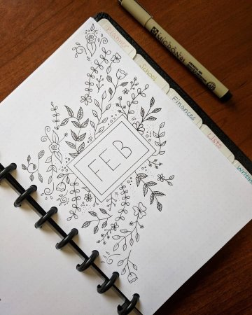

Простые вещи из бумаги
Бума́га (предположительно от итал. bombagia,
первоисточником же считается иранский) —
волокнистый материал с минеральными
добавками.


Максимальная белизна
Для повышения белизны, гладкости
и мягкости в состав бумажной массы
вводят белые минеральные вещества:
мел, тальк, каолин и др. Эта операция
называется наполнением.
Отлив бумажного листа осуществляют
на бумагоделательной машине,
важнейшей частью которой является
является непрерывно движущаяся (как
транспортер) металлическая или
транспортер) металлическая или
Simple скетчбук
80 листов, твердая обложка, бумага
Fabriano 200 г/м2. Подойдет и для
рафики и для акварели. Для самых
смелых творческих замыслов!

купить